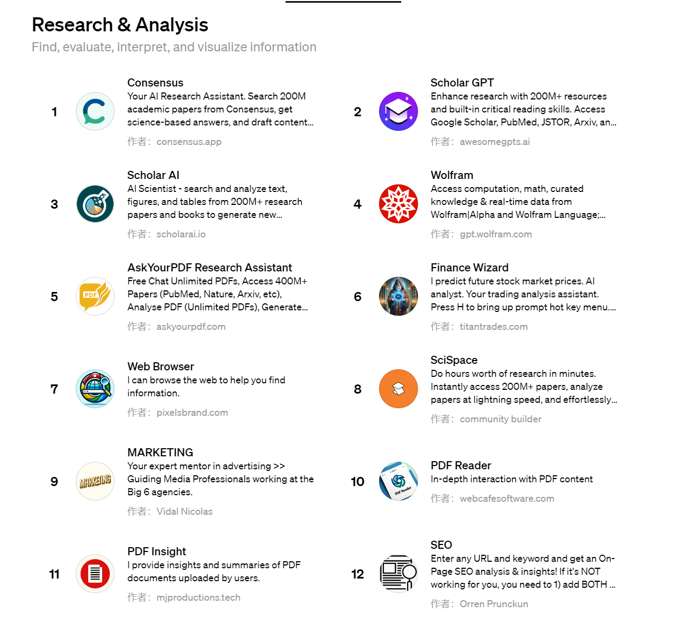
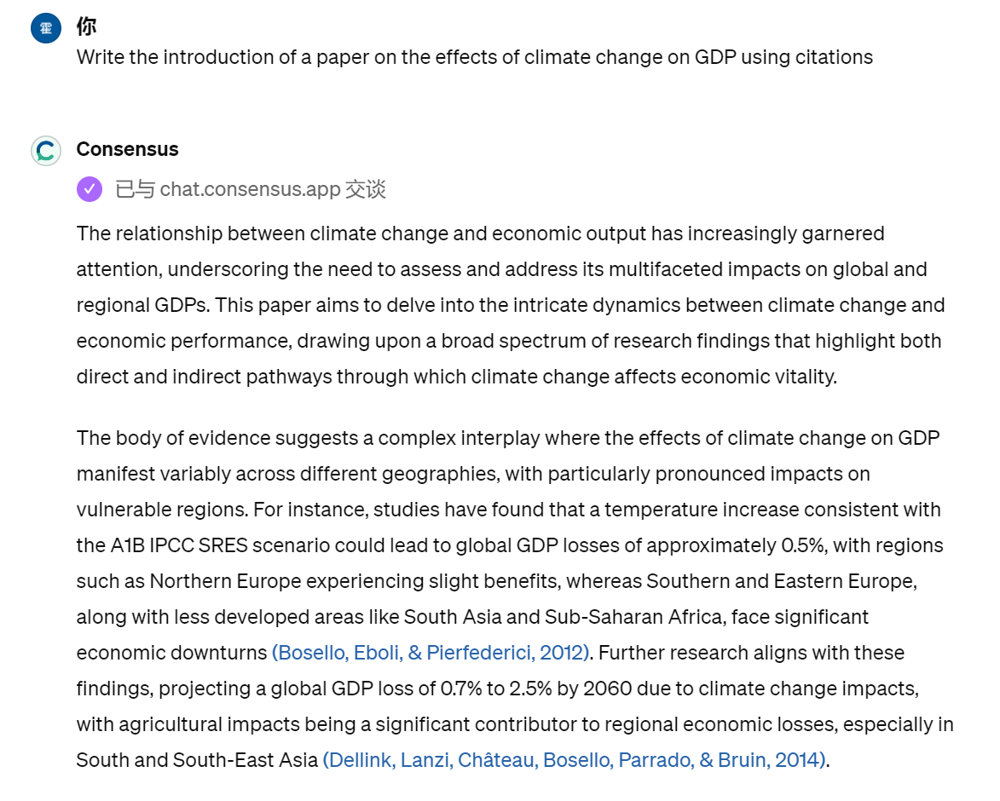
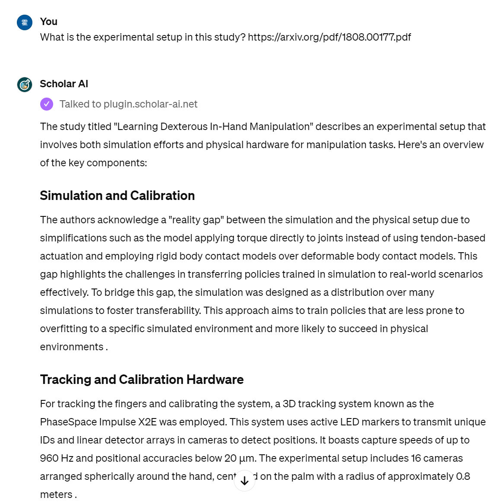

Functionality
ChatGPT can analyse diverse journals and articles from Internet and summarize
their content. Researchers can
draw out some meaningful insights from the summarized datasets. It helps:
- collect useful data
- identify the patterns from data
- summarize the content from passages
|

Figure 1 : ChatGPT Screen Capture
|
|
Figure 2: Imagine Photo
|
Benefits
- save researcher's time for collecting data
- improving scientific discovery
- increasing effectiveness of research and verification process
- reduce human errors
|
Real-world cases
|
Consensus
It provides 200 million academic paper assist researchers and students seeking science-based answers.
Features:
- Search for citation statements
- access peer-reviewed research articles
- assisting in content drafting with accurate citations
|

Figure 3 : Screen Capture
|

Figure 4 : Screen Capture
|
ScholarAI
It creates summary of a passage from pdf file or url and provides summarized articles, reports, and book
chapters for you to help you keep up with the latest research and quickly assess how relevant any document
is to your work.
Features:
- do abstract search
- literature mapping
- summarize full text through link
- generate and manage citation
|
Potential impact
- help less experienced workers enhance their productivity
- lower labor demand
- job replaced by AI
|